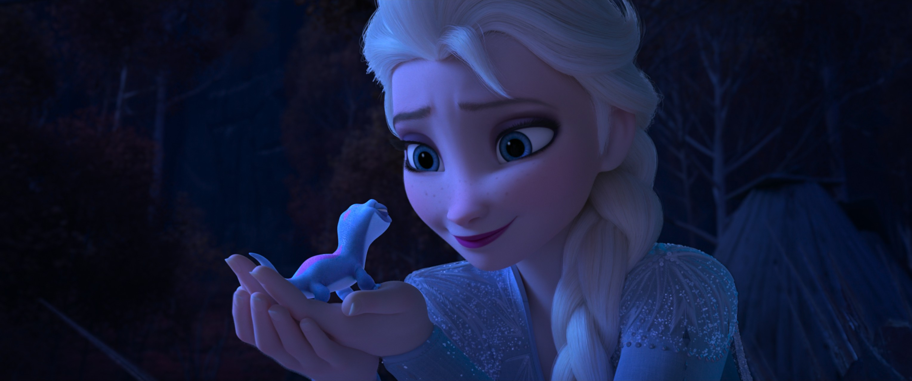

Vuelie
Vuelie
开场合唱 · 时长 1:36
一、歌曲基本信息
《Vuelie》是《冰雪奇缘 (Frozen, 2013)》中的经典歌曲，由Kristen Anderson-Lopez与Robert Lopez创作。这首歌在电影中承担着重要的叙事功能，是角色情感表达和剧情推进的关键节点。（来源：迪士尼官方 / Frozen原声带）
>二、完整歌词（中英对照 · 逐句交互 · 播放高亮）
三、关键歌词逐句考据
呼唱式的约伊克前奏。Vuelie 源自传统北欧萨米（Sámi）人的 joik 咏唱，几乎没有语义，靠元音与即兴唱腔传达情绪。作为开场，它一落音便把观众拽入北地广袤、神秘的自然大地，是《冰雪2》对萨米文化最高的致敬。
呼应式的人声节拍。约伊克常以无词音节模拟风声、马蹄与自然的声响；这里的“hahiyaha”与随后的鼓点（实际是北欧民乐器）交织，先声夺人地描绘出风雪中未知力量的涌动。
渐强的约伊克旋律。尼斯摇（北欧）风格下，这些音节铺成情绪的螺旋上升——配合开幕时艾莎望向深林的镜头，仿佛正是第宇宙第五精灵的呼唤借着风声传来。
约伊克的收束与转承。吟唱在此渐隐，让位于正式的叙事乐。它在结构上是“引子—正歌”的桥梁，也在气质上为全片定下了严肃史诗而非童话喜剧的基调。
四、歌曲定位与深度分析
🎯 歌曲定位
《Vuelie》是《冰雪奇缘》(2013) 的引子（配合迪士尼城堡 logo 与片名卡），由挪威萨米作曲家 Frode Fjellheim 创作、电影配乐家 Christophe Beck 改编，挪威女声合唱团 Cantus 演唱。它与随后的《Frozen Heart》一前一后，共同把观众领入阿伦黛尔的"极北文化"氛围——前者是仪式化的萨米吟唱，后者是民间的劳动号子。[来源：vuelie.no；animatedviews.com 访谈]
💡 内涵与主题
"Vuelie" 是南萨米语（South Sámi）中"约伊克（yoik）"一词，指萨米人一种古老的传统歌唱/吟唱方式。歌词没有确切语义，只是一串音节（"Na na na heyana…"），其本质是"以声音召唤自然之灵"。这正契合影片对冰雪、自然与神秘北方的想象——一种超越语言、直抵土地与灵魂的呼唤。[来源：animatedviews.com Frode Fjellheim 访谈]
🎬 在电影中的作用


在片头字幕与城堡 logo 处奏响，奠定全片的"寒冷、斯堪的纳维亚"基调，随后无缝过渡到《Frozen Heart》。它把"北境"从视觉上的雪国，提升为有真实文化根系（萨米文化）的声景。其约伊克动机也贯穿全片配乐，并在片尾《The Great Thaw (Vuelie Reprise)》中回归。[来源：chroniquedisney.fr；vuelie.no]
🌱 来源与创作灵感
核心素材来自 Frode Fjellheim 已有的作品《Eatnemen Vuelie》。Fjellheim 出身于特隆赫姆，后将爵士与萨米约伊克传统结合，自创"世界音乐"风格；原曲本是"约伊克旋律 + 一首丹麦赞美诗《Deilig er jorden》（英译《Fairest Lord Jesus》）"的混合。Disney 与 Beck 向他邀歌时，要求去掉赞美诗段落，并与其合作另写一段更明亮的高声部旋律，最终形成"深沉的约伊克 chant + 更古典的合唱对位"双层人声结构。[来源：animatedviews.com 访谈；chroniquedisney.fr]
"说明（厘清常见误传）：有说法把本曲归为"南非作曲家 Cantor 的《Vuelie》"，这是不准确的。本曲确为挪威萨米作曲家 Frode Fjellheim 所作，常被拿来与《狮子王》开场 Lebo M 的斯瓦希里 chant 类比，但后者才是南非语境。演唱本曲的 Cantus 是挪威特隆赫姆的一支全女声合唱团（指挥 Tove Ramlo-Ystad），并非人名"Cantor"。[来源：vuelie.no；animatedviews.com]
🛠️ 制作过程
| 项目 | 内容 |
|---|---|
| --- | --- |
| 原曲 | Frode Fjellheim《Eatnemen Vuelie》 |
| 改编 | Christophe Beck（合作新写上层高声部旋律） |
| 演唱 | 挪威女声合唱团 Cantus（指挥 Tove Ramlo-Ystad） |
| 录音地 | 挪威特隆赫姆录音室（两个晚上完成） |
| 语言/语义 | 南萨米语约伊克，音节无确切词义 |
录音在特隆赫姆的录音室完成，Cantus 事先排练充分、现场仍做了微调；Disney 音乐高级副总裁 Tom MacDougall 与 Christophe Beck 的录音师亲赴监棚，确保效果。配器中还融入 bukkehorn（羊/山羊角制成的古斯堪的纳维亚乐器）与 kulning（牧羊女远距离呼唤羊群的古老唱法）等北欧音色，由 Beck 统筹以求"在地真实感"。[来源：chroniquedisney.fr；animatedviews.com]
🔍 解析与评价
- 结构上的"双层人声"是最大亮点：底层是低沉、近似吟诵的约伊克，上层是更学院派、更明亮的古典合唱，两者既对比又融合，形成独特的"合唱中的合唱"。
- 无词义的音节并非"随便哼唱"，而是约伊克这种声乐传统本身的语法——以声音本身（而非歌词）承载意义，与影片"冰雪不可被语言穷尽"的神秘感同构。
- 乐评称其为"令人屏息的合唱开篇"，像《狮子王》Lebo M 的 chant、《熊的传说》的原住民吟唱一样，用最初几个音符就定下整部电影的音乐身份。[来源：animatedviews.com 引 Amazon 乐评；vuelie.no 引挪威媒体]
🌍 文化影响与获奖
《Vuelie》随《冰雪奇缘》原声带（2013-11-25 由 Walt Disney Records 发行）全球传播，也让约伊克这种萨米传统歌唱被推介给全球新听众，Fjellheim 因此受到挪威萨米议会主席的公开赞誉。它更多是"氛围/文化"性曲目，未作为单曲打榜，但已成为《冰雪奇缘》文化识别度最高的声音符号之一。[来源：animatedviews.com；vuelie.no]
五、这片声音比影片更老：1996 年的原作、被拿掉的赞美诗与一个民族性的问候
（一）官方设定与创作方的公开表述：这不是迪士尼为影片写的歌
《Vuelie》最反直觉的一点是：它比《Frozen》老得多。据 Wikipedia《Frode Fjellheim》条目，这首曲子的原型《Eatnemen Vuelie》（大地之歌）写于 1996 年、2002 年发行，作者是挪威南萨米（South Sámi）约克唱（yoiker）Frode Fjellheim。迪士尼版是这个既有作品的略微改动版（来源：Wikipedia《Frode Fjellheim》条目）。
Fjellheim 自己的叙述补上了被迪士尼略过的细节。据他在 AnimatedViews 与 Media Magic 的两篇专访，迪士尼找上门的经过很随意：「我被很简短地介绍了这个项目，同时附带一个请求——希望他们能在片中使用我的一首既有作品《Eatnemen Vuelie》。」他还提到，剧组是在挪威勘景时买了他的一张专辑才发现他的（来源：AnimatedViews, 2014-03-18）。
迪士尼提出的修改要求也很具体：原曲是「一段约克风格的旋律 + 叠加在上面的一首赞美诗」，而迪士尼问他能不能做一个去掉赞美诗部分的版本（来源：同上，见 Media Magic 法语版同一访谈）。
被去掉的那首赞美诗是 《Deilig er jorden》，意为「大地何等美好」，歌词由 19 世纪丹麦诗人 Bernhard Severin Ingemann 于 1850 年写下，在英语地区以 《Fairest Lord Jesus》（最美的主耶稣）之名流传（来源：同上，Fjellheim 原话）。Rotoscopers 的报道则给出了时点证据：Cantus 合唱团指挥在一次音频访谈中透露，片中只会使用《Eatnemen Vuelie》的部分，赞美诗段落会被移除，「因为不符合影片的语境」，并说明 Fjellheim 已为此重新作曲，但基于同样的主题（来源：Rotoscopers, 2013-09-14）。
（二）词源与文化：一个词、一片土地、以及它被改掉了什么
先说这个词。Fjellheim 明确解释：「Vuelie」在南萨米语里就是「一首约克」的意思。而约克（yoik）既是萨米人的一种歌曲类型，也是一种独特的演唱方式（常被称为「吟诵」）（来源：AnimatedViews, 2014-03-18）。萨米人分布在哪里？他也答了：挪威、瑞典、芬兰与俄罗斯。
因此片名是 Eatnemen Vuelie——Eatnemen 是南萨米语「大地／土地」的意思，所以整首歌名可以译作「大地的约克」。这一点很重要：它不是一个专有名词，而是一种音乐体裁的名字，被直接用作迪士尼全系列的主题曲名。
他在访谈里还描述了自己的创作意图，这个描述能解释这片声音为什么听起来那样：「我想写一个有两个非常不同的声乐元素的东西——一种深沉的『吟诵式』约克，结合更古典的声乐风格。两者一起听时，结果能清楚显示它们的差异，同时又强化各自独特之处。与此同时，我希望这些风格彼此融合，形成一种像合唱团一样的全新声音。」（来源：同上）。而据 Wikipedia 记载，他早年在特隆赫姆音乐学院先受的是爵士训练，之后才把爵士与萨米背景结合成自己的风格——所以这片「大地」的呼喊里有一层现代爵士的血缘。
（三）官方发布与可靠网络资料：它在片中的位置，与被删掉的赞美诗
这层「融合」在片中的落点很具体。据 Wikipedia《Frozen (2013 film)》条目，2013 年 9 月 14 日官方宣布由 Fjellheim 的《Eatnemen Vuelie》作为影片开场曲，含有约克元素；制作团队还请来挪威语言学家兼作曲家 Christine Hals 协助为艾莎加冕礼撰写的那首古诺斯语歌（mi duod）处理歌词，并前往特隆赫姆录制 Cantus 合唱团（来源：Wikipedia《Frozen (2013 film)》条目 Soundtrack / Production 节）。
原声带曲目表进一步坐实了这首歌的结构位置：《Vuelie》（与 Cantus 合唱团）是第 11 首，时长 1:36；而《The Great Thaw (Vuelie Reprise)》是第 31 首，即全碟最后一轨（来源：Wikipedia《Frozen: The Songs》曲目表）。也就是说——这大约 96 秒的无词吟唱，是这部片唯一的开场与唯一的收尾。
而它与北地原民的关系也写进了设定：据 Disney Fandom 记载，片中北地人（Northuldra）在认出艾莎与安娜流着母亲伊杜娜的血之后，以唱 Vuelie 的方式向她们表示尊重与友善（来源：Disney Fandom《Vuelie》词条）。换句话说，这首歌在片中的第一次出现不是「配乐」，而是一个民族用来迎接客人的礼节。
最后回到被删掉的赞美诗。Elektra 合唱团 2015 年的演出说明里有一句很值得记的话：她们在迪士尼版里保留了「叠在挪威约克之上的《Fairest Lord Jesus》赞美诗曲调」，并说指挥的要求只是「把开场做得神秘一点」（来源：Elektra 演出曲目说明）。这说明迪士尼虽然拿掉了歌词层，旋律层的基督教遗产并没有被完全清除——它仍然在原来的位置，只是失去了可以听懂的词。
这首歌最动人的地方，是它本来就不是为任何故事写的。1996 年，Fjellheim 只是想把两种声音放在一起——一种来自大地的、几乎不承载语义的呼喊，和一种更规整的、被写过诗的声音。迪士尼拿走了后者，却把前者原封不动地留在了全片的第一秒和最后一秒。换句话说，《Frozen》最开头和最结尾的那段声音，根本不属于这个世界——它属于它自己。